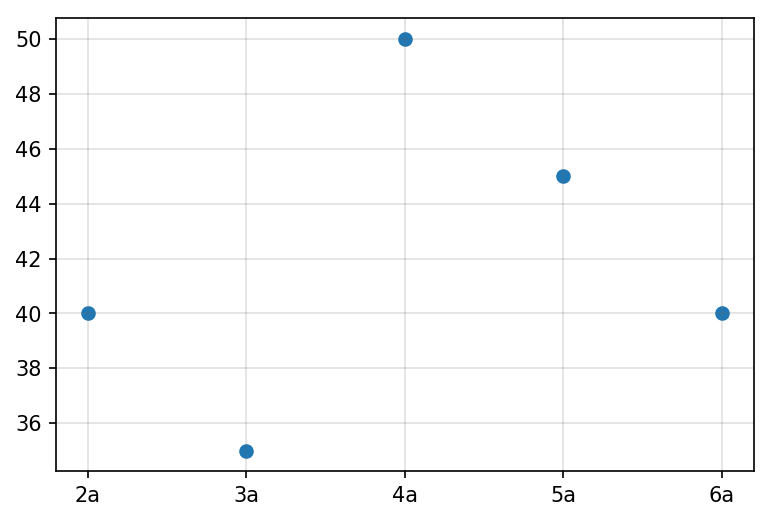
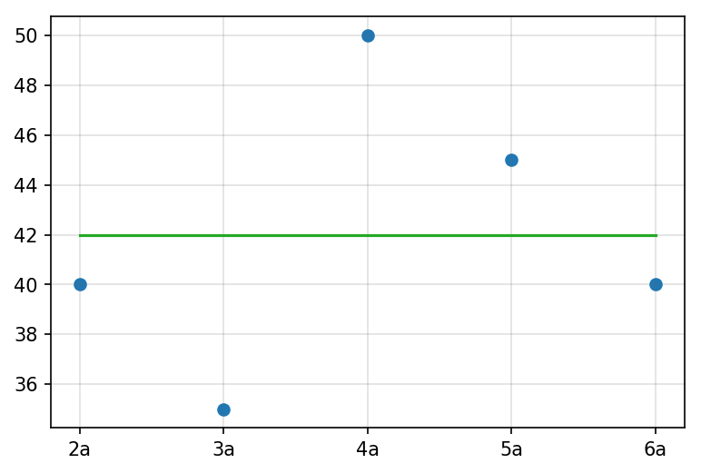
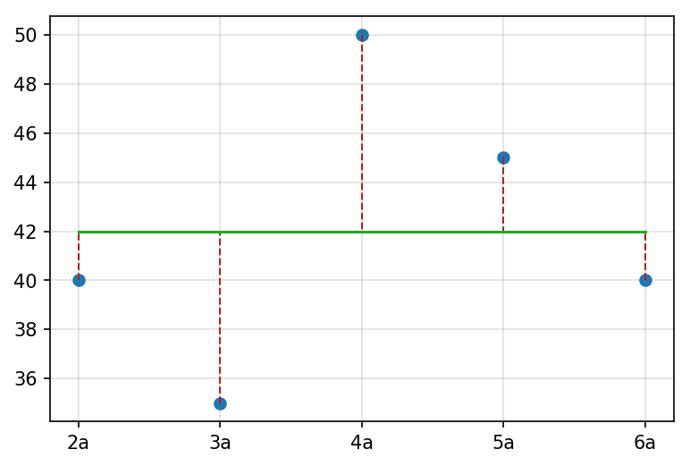

Regressão: estimar uma relação desconhecida entre variáveis aleatórias, baseado em valores que já conhecemos.
Usar o passado para estabelecer um modelo no presente.
Útil quando precisamos prever valores em eventos recorrentes.
Ex: Tempo gasto indo de casa ao trabalho.
Também útil quando precisamos explicar um fenômeno de interesse e queremos saber o quanto regular,
ou previsível este é.
Observando uma variável aleatória
Definimos uma variável aleatória para a qual o valor queremos estimar (e.g., o tempo gasto)
e observamos os valores conhecidos.

Estimando um valor desconhecido
Procuramos um valor que mais se aproxima das observações conhecidas.
Nesse caso, a média aritmética dos tempos gastos na semana.

Analisando o erro
A diferença entre o valor estimado e os valores conhecidos é chamada de erro ou residual.

Analisando o erro
A diferença entre o valor estimado e os valores conhecidos é chamada de erro ou residual.
A melhor aproximação é aquela que apresenta os menores erros.
Nesse caso, o uso da média aritmética garante que os erros foram minimizados.
Quantificamos o erro total através da soma dos seus quadrados: $\sum_i{(x_i - \varepsilon)^2}$, onde $\varepsilon$ é o erro da estimativa com relação a $x_i$
Regressão Linear
Índice
Variáveis dependentes e explicativas
Equação da regressão
Estimando os parâmetros da regressão
Regressão múltipla
Regressão Polinomial
Exercícios
Variáveis dependentes e explicativas
Quando consideramos uma função $y = f(x)$, podemos estimar o valor de y, através de pares $(x, y)$ conhecidos.
Nesse caso, $y$ é chamado de variável dependente, pois é determinada por $x$.
$x$ é chamada de variável explicativa ou independente.
Equação da regressão
A equação da regressão simples é dada por:
$$y_i = \alpha + \beta x_i + \varepsilon_i$$
onde
$y_i$ é o valor da estimativa.
$\alpha$ é o coeficiente de interceptação da reta de regressão.
$\beta$ é o coeficiente de inclinação da reta de regressão.
$\varepsilon_i$ é o erro de estimativa.
$\alpha$ e $\beta$ são chamados parâmetros do modelo de regressão.
Estimando os parâmetros da regressão
A estimativa dos parâmetros é feita de forma a minimizar o erro total do modelo.
Usualmente feita através do método dos mínimos quadrados:
$y_i = \hat{\alpha} + \hat{\beta} x_i + \varepsilon_i$, onde $\hat{\alpha}, \hat{\beta}$
são os estimadores dos parâmetros.
$S(\hat{\alpha}, \hat{\beta}) = \sum_{i=1}^{n}{(y_i - \hat{\alpha} + \hat{\beta} x_i + \varepsilon_i)^2}$,
é a soma dos quadrados dos erros.
A minimização é feita derivando $S(\hat{\alpha},
\hat{\beta})$ em relação a $\hat{\alpha}$ e a $\hat{\beta}$ e igualando a zero.